A sculpture that grows from hormone molecules, evolution rules and outside factors.
The core rule: a hormone gains mass as single molecular units keep bonding together. This growth is shaped by three factors (body regulation, environmental disturbance and food) and moves through five stages, until the form splits into white (female) and black (male).
The form is not drawn by hand. Each slider stands for a concept, not a shaping tool. You change the factors and the stage, and the rules produce the form.
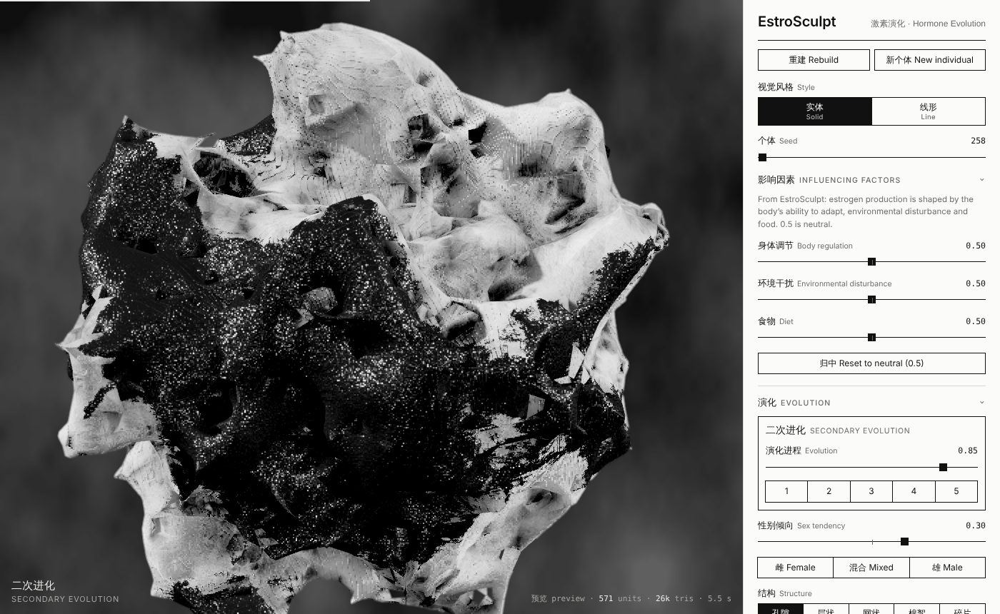
The project began on paper, not in 3D. In the 2D P sketches, hormone molecules are drawn as circles joined by curved bonds. They gather into clusters, spread across stacked planes, and slowly thicken into a solid body.
Those drawings were then organised into an evolution board. The board sets the order of growth and the meaning of colour: a white core is female, a black core is male, and grey is not yet differentiated. It also names four ways the mass can connect inside: pore, lamellar, reticular and cotton-like. The simulator follows this board from left to right.
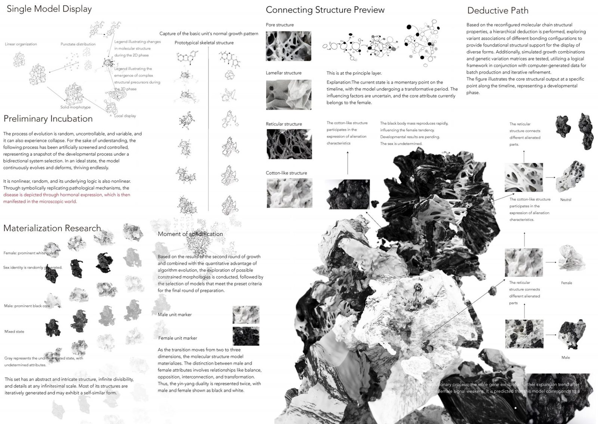
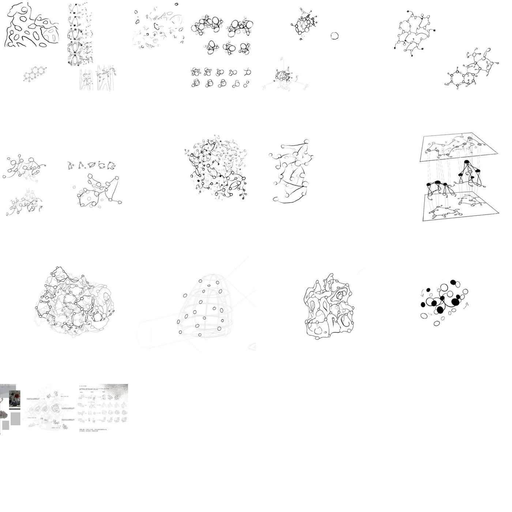
The 423 images in 3D M show where the growth ends up: porous white crystalline masses, dark granular crystals, sphere clusters and a lattice cage.
Every rule in the simulator comes from one of four parts of the project. The table lists what each part gave. Two things were added during the build and are marked as such.
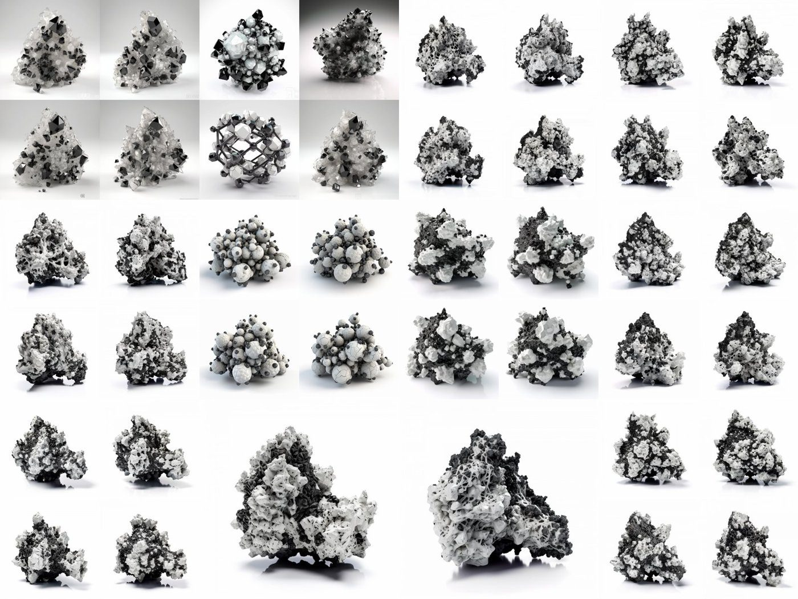
| Source | What it is | What the simulator took from it |
|---|---|---|
| 2D P (85 images) | Hand drawings: atoms as circles, curved bonds, dense clusters, two stacked planes with a network between them | Units and curved bonds, clustering, layered planes, the early flat stages |
| 3D M (423 images) | Form studies: porous white masses mixed with dark granular crystals, sphere clusters, a lattice cage | The white porous body, the black granular body, porosity, two photo textures |
| Evolution board | Five stages; female = white core, male = black core, grey = undifferentiated; pore, lamellar, reticular and cotton-like structures | The five-stage timeline, the sex logic, the four structures, collapse, male expansion in the last stage |
| Project text and renders | Estrogen production shaped by the body’s ability to adapt, environmental disturbance and food. Renders with radial fibres, dark branching patches and depth of field | The three factor sliders and the surface look: radial fibres, branching stains, dark grey backdrop, depth of field |
Added during the build: a fifth structure, Shard, to get closer to the plate-like renders, and the direction of each factor’s effect. Both are artistic readings, not part of the original board.
Each early stage of the simulator is a direct translation of one sketch. For every pair below, the sketch is on the left and the simulator state built from it is on the right. The line under each title is the rule that was written down.
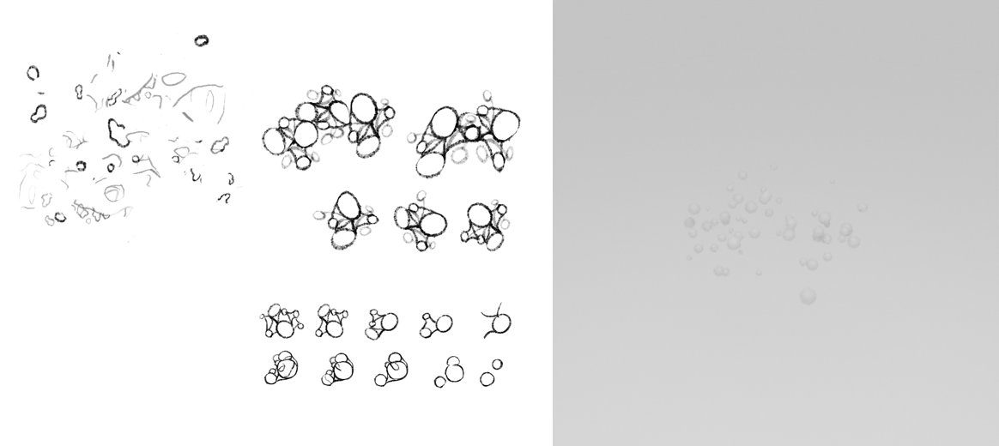
Scattered units and small molecule groups become loose points on a plane.
Rule: units appear from the centre outward and stay flat at first.
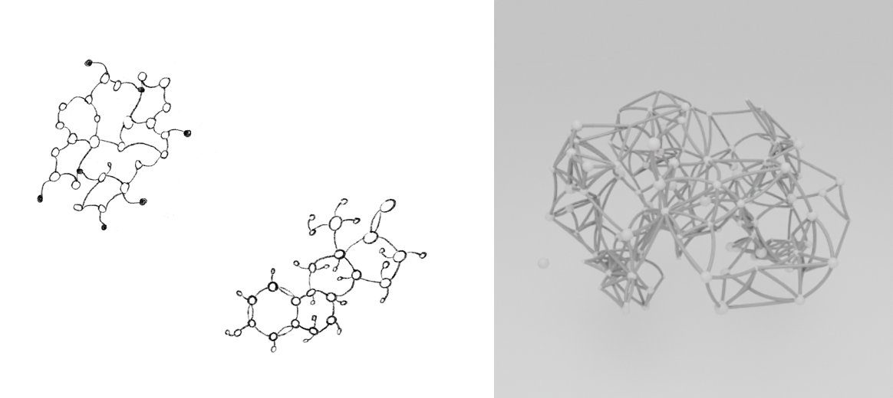
Ring-and-chain molecules become curved bonds between neighbouring units.
Rule: each unit links to its three nearest neighbours with a slightly bent bond.
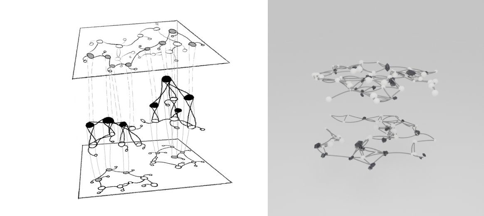
Two planes with networks and dark nodes rising between them become the layering control and, later, the lamellar structure.
Rule: units are pulled onto evenly spaced horizontal planes.
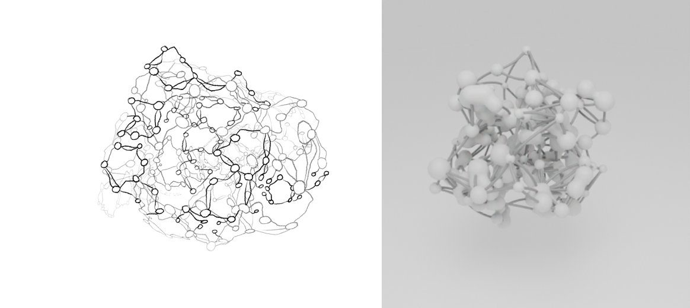
The tangled network folds into a round cluster. This is the step from 2D to 3D.
Rule: units gather into a few clusters, swell and start to fuse.
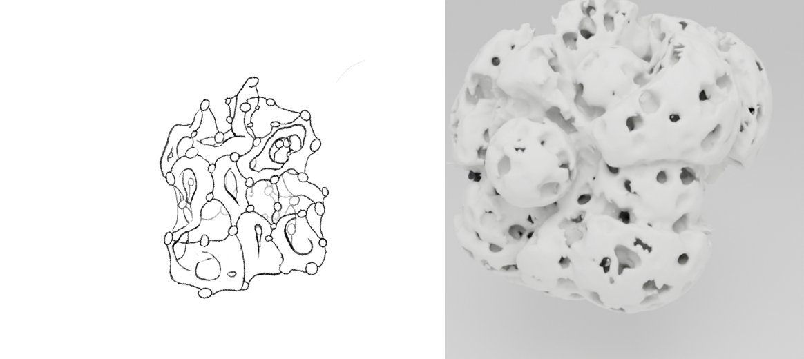
The outlined body full of holes becomes a computed surface with real pores.
Rule: the fused mass is carved by holes and walls.
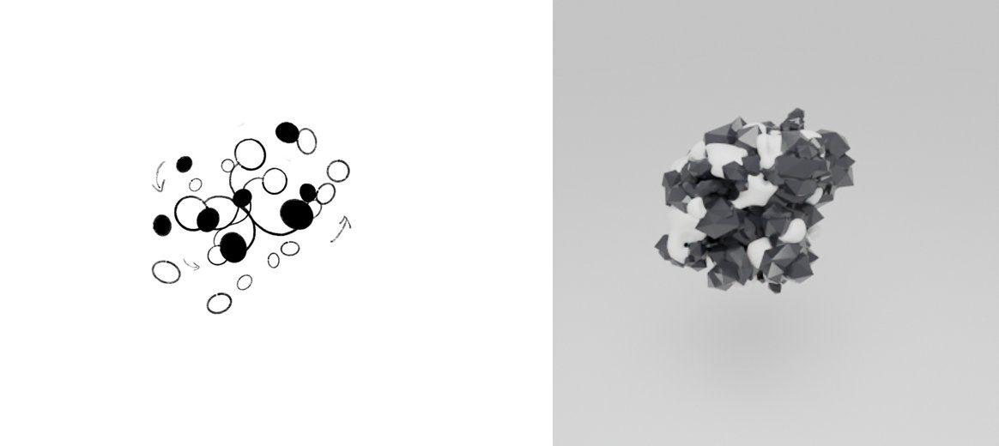
Filled and open circles become the black body and the white body.
Rule: after materialisation each unit is white or black. Sex tendency sets how many are black and whether black sits at the core or the edge.
The simulator was first built as a Blender add-on. It went from a quick metaball sketch to a detailed computed surface in seven versions. Each version answered one piece of feedback.
Metaball units, curved bonds, faceted black crystals, four preset stages, studio light and camera, bake to mesh.
First goal: control the 3D form with parameters in Blender.
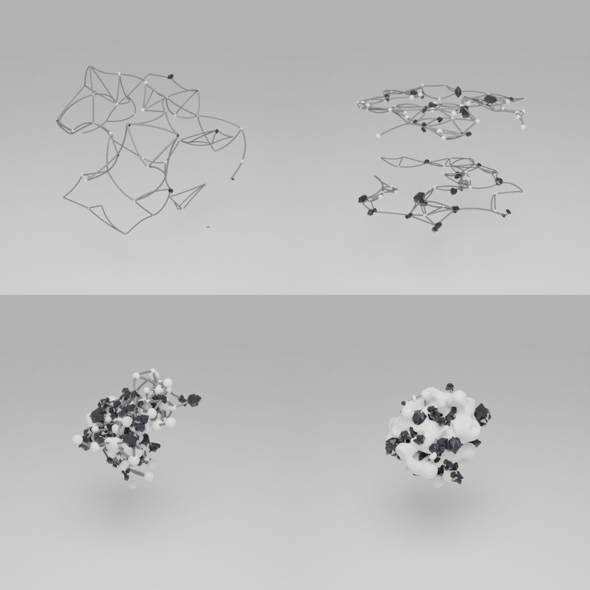
The evolution board built in: one Evolution slider across five stages, sex tendency, four structures, black expansion, collapse and mutation.
The evolution rules were shared during the build.
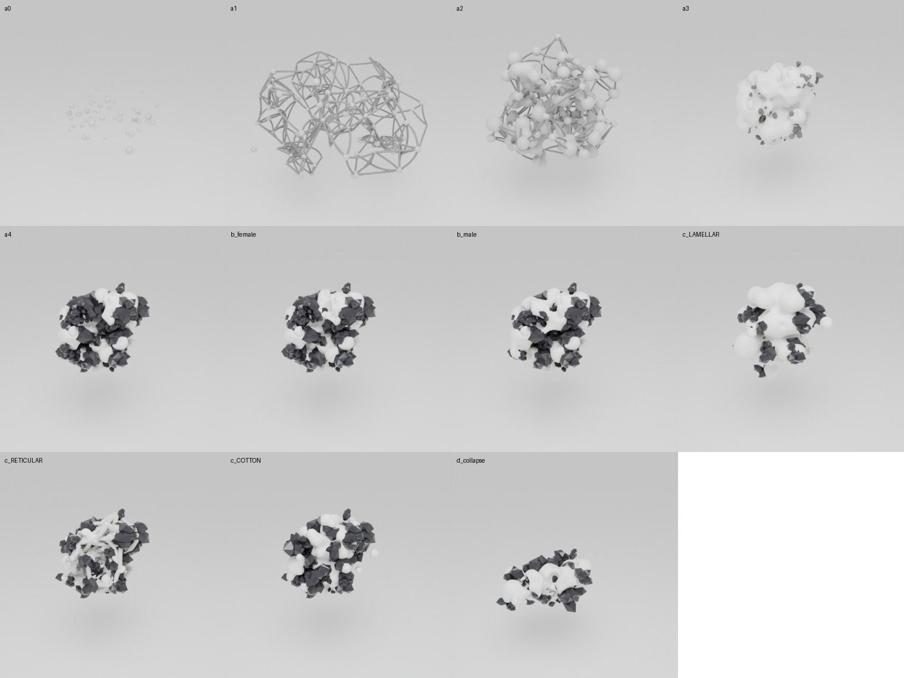
A detailed mode: a 3D density field in Geometry Nodes with real pores, reticular walls, lamellar sheets and cotton-like lumps. Small granules give the black body its texture.
v0.2 looked too rough next to the reference board.
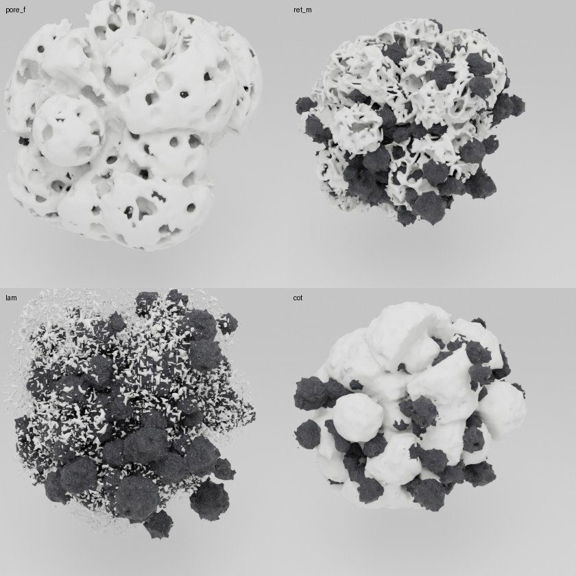
One fused surface for white and black, with a darkness value on every point. Black bleeds into white as torn streaks. A large-scale warp turns round units into rock-like masses.
Make black and white blend naturally; the background was too bright.
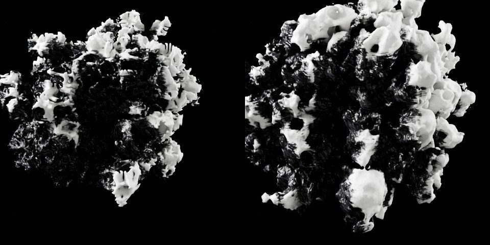
Photo textures cut from 3D M, radial fibres, feathered dark patches, a smoothing pass, the Shard structure, a dark grey cloudy backdrop, depth of field, and rendering on the GPU.
“Edges too sharp”; match the project renders; “background is dead black”.
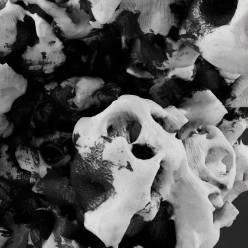
Separate detail levels for the viewport and the final render. Slider changes wait 0.4 s, then rebuild once.
“Too laggy”. A denoised preview was tried and removed because it changed the look.
Three factor sliders (body regulation, environmental disturbance, food), each driving several visual parameters. Bilingual labels and a regrouped panel; technical settings moved into one small Render Settings panel.
Every slider has to be explainable in a review.
A web version, a visible sex control, and the new name EstroSculpt across the add-on, the web page, the folder and the documents. The add-on is now installed permanently in Blender.
The sex control had no visible effect; the Blender panel was awkward to use and to show.
Every slider above Render Settings stands for an idea from the project. The render settings are technical only.
The three influencing factors come from the project text: estrogen production is shaped by the body’s ability to adapt, by environmental disturbance and by food. Each factor runs from 0 to 1. At 0.5 it leaves the form unchanged; above 0.5 it strengthens its effect and below 0.5 it reverses it. The directions are an artistic reading of the text, not a biological model.
| Slider | Concept | What it drives at 1.0 |
|---|---|---|
| Body regulation | The body’s ability to adapt its hormone production | Smoother surface (×1.8), less roughness (×0.6), a cleaner black/white edge, sex pulled 30% toward balance. Below 0.5: more collapse and mutation, read as dysregulation |
| Environmental disturbance | Pressure from outside the body | More warp (×1.7), mutation +0.3, roughness ×1.5, finer fracture, black expansion +0.2 |
| Food | The impact of diet | More units (×1.35), fuller mass (×1.15), fewer pores (×0.6), sex −0.35 toward female. Below 0.5: sparser, more porous, darker |
| Slider | Concept | What it drives |
|---|---|---|
| Evolution (0–1) | The timeline of the board | 0–0.2 incubation · 0.2–0.45 skeleton · 0.45–0.65 solidification · 0.65–0.85 materialisation · 0.85–1 secondary evolution |
| Sex tendency (−1 to +1) | Female, mixed, male; yin and yang as white and black | How much of the body is black, and whether black sits at the core (male) or the edge (female) |
| Structure | Pore, lamellar, reticular, cotton-like (+ Shard) | Holes, stacked sheets, perforated walls, soft lumps or broad plates |
| Black expansion | “The male gene expands after aggregation, the female signal weakens” | Extra black units during secondary evolution |
| Collapse | “Evolution can collapse” | Units drop out; the rest sag and spread |
| Mutation | Genetic variation | Random shifts in unit position and size |
| Seed | One individual under the same rules | A new arrangement: same rules, different body |
| Slider | Concept | What it drives |
|---|---|---|
| Yin-yang blend | How far the two hormones mix and turn into each other | Width of the stained zone where black bleeds into white |
| Form warp | Environmental pressure | Large distortion that turns round units into rock |
| Micro scale | The slice from macro to micro | Density of pores, walls and sheets |
| Surface roughness | Visual only | Noise on the surface and grit on the black body |
| Smoothing | Visual only | Softens sharp edges after the surface is built |
The panel never edits the shape directly. It only sets numbers. Each time a slider moves, the whole chain below runs again, from the rules to the final surface.
The key step is the density field. The space around the sculpture is divided into a fine grid. Every grid point gets a value: high when it is close to a molecule, low when it is far away. The surface is drawn where the value crosses zero.
p is the nearest molecule and r its radius. P′ is the point after a slow, large-scale warp, which turns round units into rock-like masses. So any slider that changes mass, radius, warp or noise changes the surface.
All random values for a molecule are drawn once from the seed. Moving a slider deforms the same body instead of reshuffling it, which is why the evolution animation is continuous.
Pore carves out spherical holes. Reticular keeps only thin cell walls. Lamellar adds stacked wave sheets. Cotton-like adds soft lumps. Shard uses very large cells to make broad plates.
White and black are one surface. Each point stores how much black body is near it, and the material turns that into streaks, feathered edges and radial fibres, so black bleeds into white as stains.
Photo textures from 3D M, radial fibres like the starbursts in the project renders, a dark grey cloudy backdrop, a 60 mm camera with depth of field, and high-contrast tone mapping.
In early versions the sex slider barely changed the image. The black core was hidden inside the body, and surface noise painted black spots everywhere, so even the female form looked spotted.
The fix was a vote. Each point on the surface looks at the molecules around it, weighted by distance, and measures their black share. Above 45% the surface turns black. Surface stains now only grow near real black molecules, so the female form stays clean white. The sex slider also sets the starting black ratio: 0.28 + 0.44 × sex.
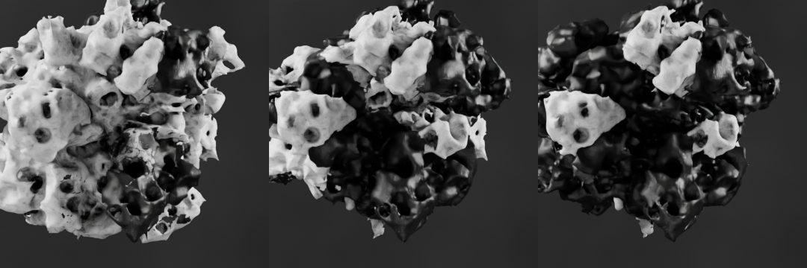
The Blender panel was hard to use and hard to show, so the same rules were moved to a web page with a minimal black-and-white slider panel. It runs in any browser.
The page computes the form in parallel background threads, starts with a quick preview and sharpens it once the sliders stop, and only redraws when something changes. It has two styles. Solid matches the Blender render. Line is a minimal drawing: horizontal slices through the body, like the stacked planes of the sketches, with the black body drawn as denser slices.
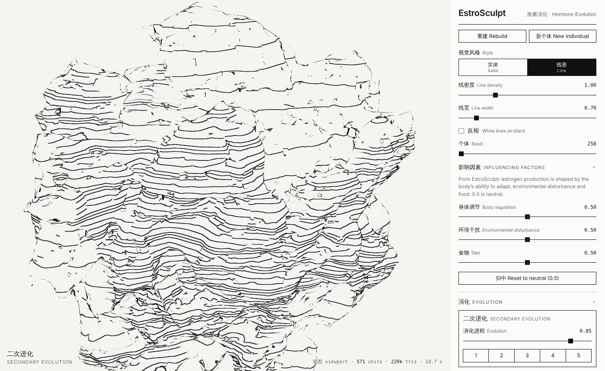
启动预览.command in EstroSculpt Web to run it locally.The form is close to the 3D M studies. It is still short of the project renders, whose broad crystal faces and film grain came partly from Cinema 4D modelling and post-production.
Files: Desktop/EstroSculpt — Blender Sim (estrosculpt.py, textures, EstroSculpt.blend) · EstroSculpt Web (index.html, core.js, field_worker.js)